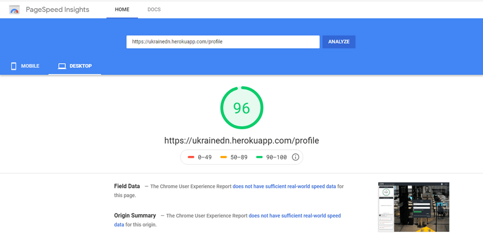
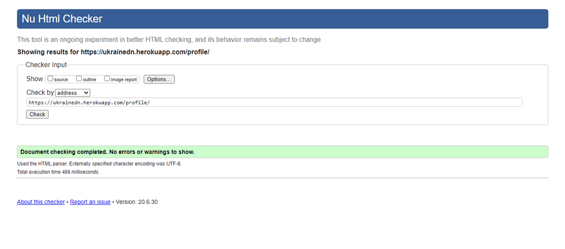

Ukraine Developers Network
Social network & news portal based on React/Redux architecture.
Video review
Technology
-
Architecture
UI(React), BLL(Redux), DAL(Axios, Thunk)
-
Shell
Для створення проекту використовував CRA. Частина додатку написана на класах, частина переписана з використанням хуків.
-
Design
Дизайн робив самостійно, черпаючи натхнення з bexance, apple і facebook. Стиль вибрав мінімалізм, metro, flat, частково з елементами сковоморфізму.
-
Layout
Style. Використав:
- css modules - вирішує проблему глобальності
- sass(scss) - для використання змінних, міксинів і вложеності
- BEМ - в даному випадку так як частину його функцій приймають на себе модулі, дозволяє розкрити scss і зручно створювати вложеність, ділити компонент на підблоки.
- Для кастомізації скролбара використовував react-perfect-scrollbar.
- Для зручного комбінування класів підключив бібліотеку classnames.
- Для стилізації select використав react-select.
Grid. За основу взяв flex, в деяких місцях юзав grid. Boootstrap з Materialize вирішив не використовувати, так як все одно готові компоненти потрібно трансформувати і перебивати своїми стилями, а побудова сітки з приходом flex не займає багато часу.
Animation. Всі анімації писав вручну, без підключення бібліотек. Щоб звязати анімації переходів з життєвим циклом компонентів в деяких місцях використав бібліотеку react-transition-group.
Adaptive. Використав стандартний responsive підхід, резинова + адаптивна верстка. Для відключення рендерингу незаюзаних компонентів в залежності від ширини використав бібліотку react-responsive(моніторить resize, innerWidth)
-
Store
Для зберігання глобального стану додатка спочатку писав спрощений аналог redux щоб зрозуміти його будову і проблеми які він вирішує, далі використовував традиційно redux, react-redux, щоб зручно використовувати redux всередині react(connect).
-
Route
Для реалізації роутинга використав бібліотеку react-router-dom
-
API
Для роботи з REST API використовав бібліотеку axios. Для того щоб мати можливість створювати асинхронні action, сайд ефекти, підключив redux-thunk.
-
Forms
Підключив redux-form, але не дуже подобається що redux-form створює свою гілку в глобальному сторі редакса. Всетаки дані мають оброблятись на локальному рівні. Частина написана без використання бібліотеки.
-
Selectors
Для кешування селекторів використав react-select.
Functional
-
Header
- Відображення даних авторизованого користувача (Логін/Фото)
- LogIN/LogOut в залежності від авторизації з перенаправленням на сторінку логінізації.
-
Login
- Форма введення авторизаційних даних (логін/пароль) з валідацію на стороні клієнта та сервера.
- Капча, з кнопкою оновлення (спрацьовує, коли більше 4 разів введено невірний пароль).
- Перенаправлення на профайл при успішній логінізації, перенаправлення з інших сторінок якщо користувач не авторизований.
-
Profile
- Зміна режиму (авторизований користувач/перегляд профілей користувачів)
- Відображення та зміна основного фото користувача.
- Відображення та редагування статусу.
- Відображення даних About user, Looking for a job, Website, Contacts (facebook, twitter, instagram, github, website).
- Кнопка редагування профілю з перенаправленням на сторінку налаштувань/кнопка відправлення повідомлення, якщо профайл в режимі перегляду.
- Створення та видалення постів (зміни на даний час зберігаються локально)
-
Dialogs
- Cписки діалогів і повідомлень (оновлюється кожних 15 секунд)
- Форма відправки повідомлення з валідацією
- Функціонал переключення між активними діалогами
- Функціонал відправки і отримання повідомлень
- Відображення кількості нових повідомлень для кожного діалогу
-
Users
- Список користувачів
- Зміна кількості користувачів на сторінці
- Пагінація
- Підписка/відписка на користувача
- Створення діалогу з користувачем
- Перегляд профіля вибраного користувача
-
News
- Список новин
- Зміна кількості новин на сторінці
- Вибір категорії
- Пагінація
- Кількість знайдених результатів
- Зміна вигляду(tablet/list/large)
-
Settings
- Зміна фото користувача, імені, статусу, статусу активного пошуку, опису, детального опису, контактів.
-
Sidebars
- Панель навігації
- Панель активних діалогів з автооновленням
- Панель відображення останніх новин з автооновленням
- Панель кількості зареєстрованих користувачів/версії додатка.
- Аудіоплеэр для фону з переключенням стану Грати/Пауза.
-
Notifications
- Система відображення очікування відповіді від серверу.
- Система відображення повідомлень.
- Обробка і виведення помилок.
Github
Quality assurance
-

-

-

Contacts
- If you have questions, please contact me 🙂.